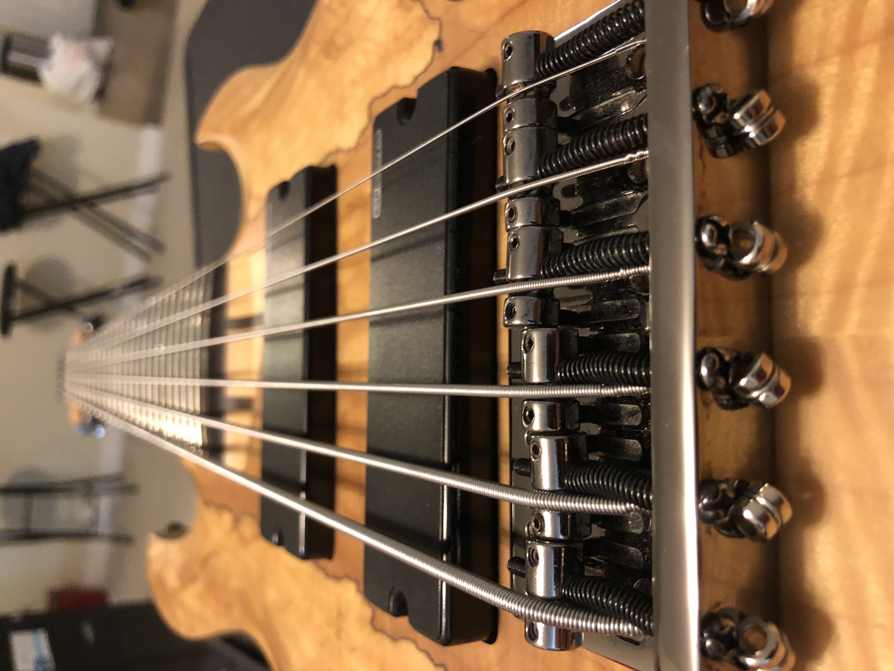

LetsJam.com
-

1500 BC – First record of a guitar-like instrument comes from ancient Persia (modern day Iran). Object called Tanbur featured 4 strings that could be played. 1400 BC – Hittite civilization used guitars for entertainment. Archeologist even managed to find visual representation of bard playing a simple stringed guitar in the ruins of that civilization. 1300 BC – Greeks used stringed instrument which traveled all across Mediterranean trade routes. 1400 BC – Romans adopted this Greek guitar and named it Chitara.
to be continue... onBass History